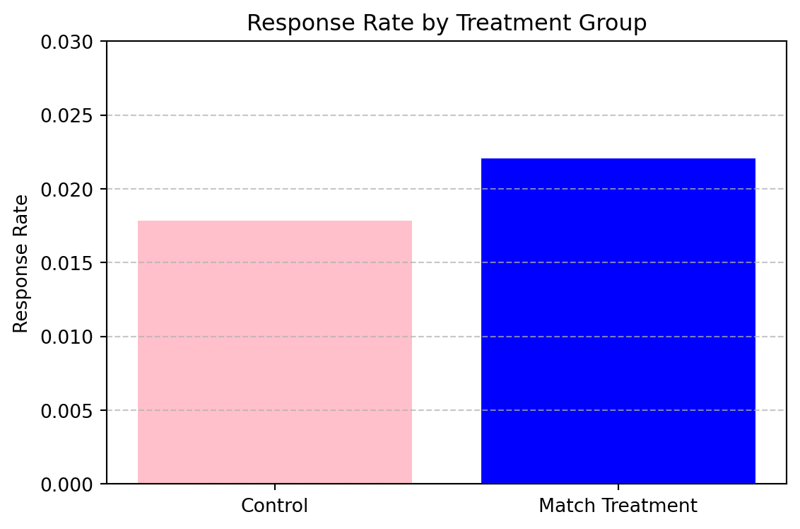
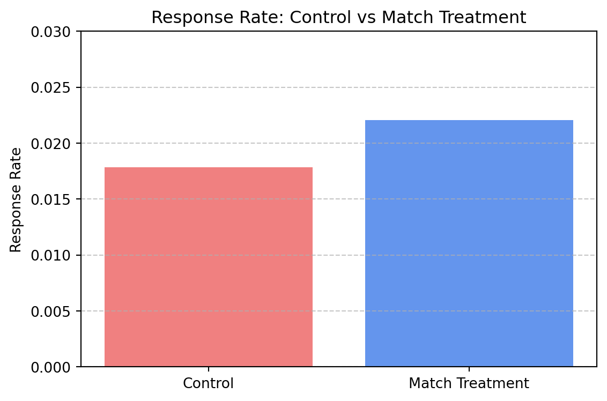

Dean Karlan at Yale and John List at the University of Chicago conducted a field experiment to test the effectiveness of different fundraising letters. They sent out 50,000 fundraising letters to potential donors, randomly assigning each letter to one of three treatments: a standard letter, a matching grant letter, or a challenge grant letter. They published the results of this experiment in the American Economic Review in 2007. The article and supporting data are available from the AEA website and from Innovations for Poverty Action as part of Harvard’s Dataverse.
In this experiment, the authors tested whether offering a matching grant could increase the likelihood and amount of charitable donations. The letters were sent by a liberal nonprofit organization in the United States. The treatment group received a message that included a matching grant — where a “concerned fellow member” would match their donation at one of three randomly assigned ratios: $1:$1, $2:$1, or $3:$1. The control group received a standard fundraising letter without any mention of a match.
Within the treatment group, match ratio, suggested donation amount, and maximum match cap were also randomized. The researchers tracked whether each recipient donated, how much they gave, and whether these outcomes varied by treatment type. This field experiment allowed the authors to analyze real behavioral responses at scale, under randomized conditions, making it a powerful test of donation incentives in practice.
This project seeks to replicate their results.
Data
import pandas as pdimport statsmodels.api as smimport matplotlib.pyplot as pltfrom statsmodels.tools import add_constantimport statsmodels.formula.api as smffrom scipy import statsfrom scipy.stats import ttest_inddf = pd.read_stata("karlan_list_2007.dta")df.shape, df.head()
((50083, 51),
treatment control ratio ratio2 ratio3 size size25 size50 \
0 0 1 Control 0 0 Control 0 0
1 0 1 Control 0 0 Control 0 0
2 1 0 1 0 0 $100,000 0 0
3 1 0 1 0 0 Unstated 0 0
4 1 0 1 0 0 $50,000 0 1
size100 sizeno ... redcty bluecty pwhite pblack page18_39 \
0 0 0 ... 0.0 1.0 0.446493 0.527769 0.317591
1 0 0 ... 1.0 0.0 NaN NaN NaN
2 1 0 ... 0.0 1.0 0.935706 0.011948 0.276128
3 0 1 ... 1.0 0.0 0.888331 0.010760 0.279412
4 0 0 ... 0.0 1.0 0.759014 0.127421 0.442389
ave_hh_sz median_hhincome powner psch_atlstba pop_propurban
0 2.10 28517.0 0.499807 0.324528 1.0
1 NaN NaN NaN NaN NaN
2 2.48 51175.0 0.721941 0.192668 1.0
3 2.65 79269.0 0.920431 0.412142 1.0
4 1.85 40908.0 0.416072 0.439965 1.0
[5 rows x 51 columns])
Description
df["gave"] = df["gave"].fillna(0)response_rates = df.groupby("treatment")["gave"].mean().reset_index()response_rates["group"] = ["Control"if x ==0else"Match Treatment"for x in response_rates["treatment"]]plt.figure(figsize=(6, 4))plt.bar(response_rates["group"], response_rates["gave"], color=["pink", "blue"])plt.ylabel("Response Rate")plt.title("Response Rate by Treatment Group")plt.ylim(0, 0.03)plt.grid(axis="y", linestyle="--", alpha=0.7)plt.tight_layout()plt.show()

This chart shows the response rate (i.e., the percentage of people who donated) in the control group versus the treatment group that received a matching grant offer. We observe that the match treatment group had a higher response rate, supporting the hypothesis from Karlan & List (2007) that mentioning a match increases the likelihood of giving. However, this doesn’t yet tell us how much they gave, or whether higher match ratios (like $3:$1) worked better. We’ll explore that next.
Variable Definitions
Variable
Description
treatment
Treatment
control
Control
ratio
Match ratio
ratio2
2:1 match ratio
ratio3
3:1 match ratio
size
Match threshold
size25
$25,000 match threshold
size50
$50,000 match threshold
size100
$100,000 match threshold
sizeno
Unstated match threshold
ask
Suggested donation amount
askd1
Suggested donation was highest previous contribution
askd2
Suggested donation was 1.25 x highest previous contribution
askd3
Suggested donation was 1.50 x highest previous contribution
ask1
Highest previous contribution (for suggestion)
ask2
1.25 x highest previous contribution (for suggestion)
ask3
1.50 x highest previous contribution (for suggestion)
amount
Dollars given
gave
Gave anything
amountchange
Change in amount given
hpa
Highest previous contribution
ltmedmra
Small prior donor: last gift was less than median $35
freq
Number of prior donations
years
Number of years since initial donation
year5
At least 5 years since initial donation
mrm2
Number of months since last donation
dormant
Already donated in 2005
female
Female
couple
Couple
state50one
State tag: 1 for one observation of each of 50 states; 0 otherwise
nonlit
Nonlitigation
cases
Court cases from state in 2004-5 in which organization was involved
statecnt
Percent of sample from state
stateresponse
Proportion of sample from the state who gave
stateresponset
Proportion of treated sample from the state who gave
stateresponsec
Proportion of control sample from the state who gave
stateresponsetminc
stateresponset - stateresponsec
perbush
State vote share for Bush
close25
State vote share for Bush between 47.5% and 52.5%
red0
Red state
blue0
Blue state
redcty
Red county
bluecty
Blue county
pwhite
Proportion white within zip code
pblack
Proportion black within zip code
page18_39
Proportion age 18-39 within zip code
ave_hh_sz
Average household size within zip code
median_hhincome
Median household income within zip code
powner
Proportion house owner within zip code
psch_atlstba
Proportion who finished college within zip code
pop_propurban
Proportion of population urban within zip code
Balance Test
As an ad hoc test of the randomization mechanism, I provide a series of tests that compare aspects of the treatment and control groups to assess whether they are statistically significantly different from one another.
balance_vars = ["amount", "female", "ave_hh_sz", "ltmedmra"]for var in balance_vars:print(f"----- {var} -----") df_clean = df[[var, "treatment"]].dropna() t_stat, p_val = stats.ttest_ind( df_clean[df_clean["treatment"] ==1][var], df_clean[df_clean["treatment"] ==0][var], equal_var=False )print(f"T-Test: t = {t_stat:.3f}, p = {p_val:.3f}") reg = smf.ols(f"{var} ~ treatment", data=df_clean).fit() coef = reg.params["treatment"] pval = reg.pvalues["treatment"]print(f"Regression: coef = {coef:.3f}, p = {pval:.3f}")print()
----- amount -----
T-Test: t = 1.918, p = 0.055
Regression: coef = 0.154, p = 0.063
----- female -----
T-Test: t = -1.754, p = 0.080
Regression: coef = -0.008, p = 0.079
----- ave_hh_sz -----
T-Test: t = 0.823, p = 0.410
Regression: coef = 0.003, p = 0.410
----- ltmedmra -----
T-Test: t = 1.910, p = 0.056
Regression: coef = 0.009, p = 0.056
Experimental Results
These balance tests suggest that the treatment and control groups were mostly similar across observable variables. For example, the difference in average past donation amount and small donor status ltnedrma were not statistically significant at the 5% level, although their p-values were close (0.055–0.056). Other variables, such as female and household size`, showed no significant difference between groups. Overall, these results support the validity of the random assignment and indicate no major baseline imbalance.
Charitable Contribution Made
First, I analyze whether matched donations lead to an increased response rate of making a donation.
df["gave"] = df["gave"].fillna(0)response_rates = df.groupby("treatment")["gave"].mean().reset_index()response_rates["group"] = response_rates["treatment"].map({0: "Control", 1: "Match Treatment"})plt.figure(figsize=(6, 4))plt.bar(response_rates["group"], response_rates["gave"], color=["lightcoral", "cornflowerblue"])plt.ylabel("Response Rate")plt.title("Response Rate: Control vs Match Treatment")plt.ylim(0, 0.03)plt.grid(axis="y", linestyle="--", alpha=0.7)plt.tight_layout()plt.show()

This barplot compares the donation rate between the control group and the treatment group that received a matching gift offer. The treatment group has a visibly higher response rate, confirming that the match incentive boosted participation.
The t-test and regression results show that the treatment group was significantly more likely to donate. The average donation rate was about 0.42 percentage points higher for individuals who received the match offer compared to those in the control group. This result is statistically significant at the 1% level (p = 0.001), indicating strong evidence that the mention of a matching gift increases the likelihood of charitable giving. These findings align with the main result from Karlan and List (2007), Table 2A Panel A.
import statsmodels.api as sm X = sm.add_constant(df_donation["treatment"])y = df_donation["gave"]probit_model = sm.Probit(y, X).fit()print(probit_model.summary())
The probit regression confirms the earlier results. The treatment group was significantly more likely to donate, with a marginal effect estimate of approximately 0.087 (p = 0.002). This result is consistent with the linear model, but the probit specification accounts for the binary nature of the outcome and better matches Table 3, Column 1 in the Karlan and List (2007) paper. Overall, the results reinforce the conclusion that the match treatment positively influenced donation behavior.
Differences between Match Rates
Next, I assess the effectiveness of different sizes of matched donations on the response rate.
T-test: $2:$1 vs $1:$1
T-stat = 0.965, P-value = 0.335
T-test: $3:$1 vs $1:$1
T-stat = 1.015, P-value = 0.310
To test whether higher match ratios increased the likelihood of donating, I conducted two t-tests: comparing $2:$1 and $3:$1 match groups to the $1:$1 group. The results show no statistically significant difference in response rates (p = 0.335 and p = 0.310, respectively).
These findings support the authors’ conclusion in the paper (page 8) that larger match ratios do not provide additional fundraising benefits over a standard $1:$1 match.
I ran two t-tests to compare whether larger match ratios (e.g., $2:$1 and $3:$1) increased the likelihood of donating compared to a $1:$1 match. Both tests returned high p-values (p = 0.335 and p = 0.310), indicating that the differences were not statistically significant.
These results support the authors’ claim in the paper (page 8) that “larger match ratios had no additional impact” on donation behavior. While the idea of a bigger match may seem more attractive, the data suggest that simply offering a match (even at 1:1) is enough to trigger the effect, and increasing the match does not enhance it.
To further examine whether higher match ratios influenced giving, I ran a linear regression using the $1:$1 match as the baseline, and included dummy variables for $2:$1 (ratio2) and $3:$1 (ratio3). The coefficients on both variables were small and not statistically significant (p = 0.338 for ratio2, p = 0.313 for ratio3). This indicates that there was no meaningful difference in the probability of donating between the different match levels. These results support the authors’ observation that larger match ratios had no additional impact beyond the base $1:$1 match.
todo: Calculate the response rate difference between the 1:1 and 2:1 match ratios and the 2:1 and 3:1 ratios. Do this directly from the data, and do it by computing the differences in the fitted coefficients of the previous regression. what do you conclude regarding the effectiveness of different sizes of matched donations?
/var/folders/t7/7j0vfkjx7b3c92ssnzsft5sw0000gp/T/ipykernel_80086/3143746436.py:3: FutureWarning: The default of observed=False is deprecated and will be changed to True in a future version of pandas. Pass observed=False to retain current behavior or observed=True to adopt the future default and silence this warning.
response_means = match_only.groupby("ratio")["gave"].mean()
I calculated the response rate differences between match ratios using both the raw data and regression coefficients.
From the data: - The response rate increased from 2.07% under the $1:$1 match to 2.26% under $2:$1 — a difference of 0.19 percentage points. - Moving from $2:$1 to $3:$1 increased the response rate only marginally, from 2.26% to 2.27% — a negligible difference of 0.01 percentage points.
From the regression: - The coefficient for ratio2 (2:1 vs 1:1) is 0.0019 - The coefficient for ratio3 (3:1 vs 1:1) is 0.0020 - The difference between 3:1 and 2:1 is only 0.0001
Conclusion: Both methods confirm that increasing the match from $1:$1 to $2:$1 has a very small (and statistically insignificant) effect on donation likelihood, and raising it further to $3:$1 has virtually no additional impact. These results support the authors’ claim that “larger match ratios had no additional impact” on donor behavior.
Size of Charitable Contribution
In this subsection, I analyze the effect of the size of matched donation on the size of the charitable contribution.
We used both a t-test and an OLS regression to compare average donation amounts between the control and treatment groups. The treatment coefficient was small and not statistically significant, suggesting that receiving a match offer did not significantly increase how much people gave on average.
This result aligns with the conclusion in the paper that match offers increase likelihood to give, but not necessarily donation size.
We repeated the analysis using only those who made a donation. The treatment coefficient remained small and statistically insignificant, showing that the size of donations among donors is unaffected by the match offer. Since the treatment was randomly assigned, this regression has a causal interpretation for donation size conditional on donating. However, the main treatment effect is seen in the donation decision itself, not in the amount given.
The histograms show that the distributions of donation sizes for control and treatment groups are similar, and the average (marked in red) is nearly the same. This visual confirms that the match offer did not affect donation size among those who gave.
Simulation Experiment
As a reminder of how the t-statistic “works,” in this section I use simulation to demonstrate the Law of Large Numbers and the Central Limit Theorem.
Suppose the true distribution of respondents who do not get a charitable donation match is Bernoulli with probability p=0.018 that a donation is made.
Further suppose that the true distribution of respondents who do get a charitable donation match of any size is Bernoulli with probability p=0.022 that a donation is made.
Law of Large Numbers
import numpy as npimport matplotlib.pyplot as pltnp.random.seed(123)n =10000p_control =0.018p_treatment =0.022true_diff = p_treatment - p_control control = np.random.binomial(1, p_control, n)treatment = np.random.binomial(1, p_treatment, n)diffs = treatment - controlcumulative_avg = np.cumsum(diffs) / np.arange(1, n +1)plt.figure(figsize=(10, 5))plt.plot(cumulative_avg, label="Cumulative Avg of Diff")plt.axhline(true_diff, color="red", linestyle="--", label=f"True Diff = {true_diff:.4f}")plt.xlabel("Number of Observations")plt.ylabel("Cumulative Average of Difference")plt.title("Law of Large Numbers: Convergence to True Mean Difference")plt.legend()plt.grid(True)plt.tight_layout()plt.show()
The plot above demonstrates the Law of Large Numbers in action. Each point on the blue line shows the cumulative average of donation rate differences between treatment and control simulations as more observations are added. As we move toward 10,000 observations, the cumulative average stabilizes around the true difference in donation probabilities of 0.004 (shown by the red dashed line). This visual confirms the Law of Large Numbers — with enough trials, the observed average converges to the expected value.
Each panel in the histogram illustrates the sampling distribution of average differences for increasing sample sizes (n = 50 to 1000). We ran 1000 simulations per group size. As sample size increases, the distributions become more symmetric and bell-shaped — confirming the Central Limit Theorem. With larger samples, even though the underlying distribution is Bernoulli (binary), the mean difference converges to a normal distribution. Notably, the true difference in means is clearly offset from zero, and zero lies in the tail